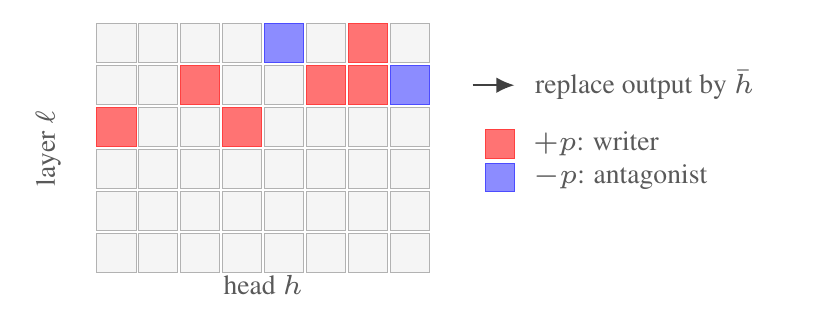

Selected work · Representation learning
Instruction tuning routes moral framing, it does not create it
The direction was already in the pretrained network. Tuning connected it to the part that answers.

When an instruction-tuned model starts treating a moral question differently from its base model, has post-training built a new representation, or has it wired up one that was already present?
The comparison uses a matched pretrained and instruction-tuned checkpoint from the same architecture, tokeniser and pretraining seed, so the post-training step is the only free variable. Without that control, any difference between two models can be attributed to pretraining instead.
In the pretrained checkpoint the framing direction sits nearly orthogonal to the judgment direction at its peak layer. In the instruction-tuned checkpoint, on the same prompts, it has rotated toward the judgment readout. Per-head attribution then locates the heads writing into that direction, and mean ablation tests whether they are actually load-bearing.
The account is falsifiable in three places. The framing should already be decodable before tuning, tuning should align it with the readout, and intervening on the aligned direction should move the judgment. Any one of those failing breaks it.
P. M. Konrad, T. Tanyel, S. Ayvaz · ICML 2026 Workshop
Everything here states what would have shown it was wrong.
All selected work →